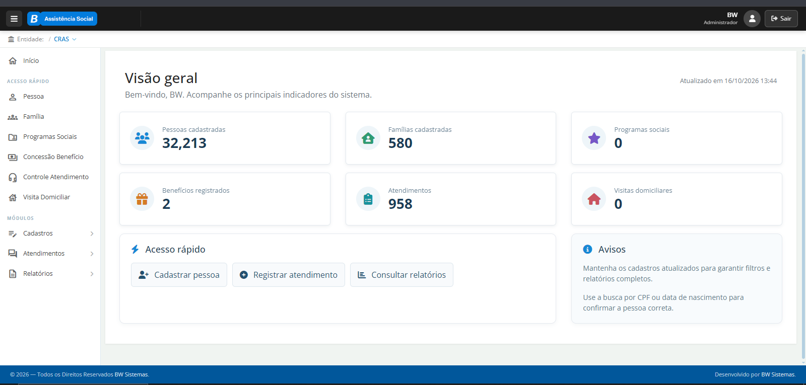

ESTUDO DE CASO · ASSISTÊNCIA SOCIAL
BW Social
Usado por equipes de assistência social, como as do CRAS, para organizar cadastros de pessoas e famílias, atendimentos e programas sociais em um só sistema.
Acessar o SocialWeb original ↗CAPTURA DO SISTEMA ORIGINAL
Dashboard de visão geral

Imagem do painel original. Esta página é uma vitrine estática: selecione a captura ou o botão acima para acessar o sistema oficial.
CONTEXTO PROFISSIONAL
Produto e domínio
O sistema ajuda profissionais da assistência social a manter o histórico de acompanhamento e organizar os serviços prestados às famílias. Minha experiência esteve ligada ao desenvolvimento e à evolução de funcionalidades desse domínio.
A página pública mostra uma captura do dashboard original e não oferece uma demonstração interativa. O repositório também documenta, separadamente, uma API técnica independente com dados sintéticos.
Arquitetura e decisões técnicas ↗